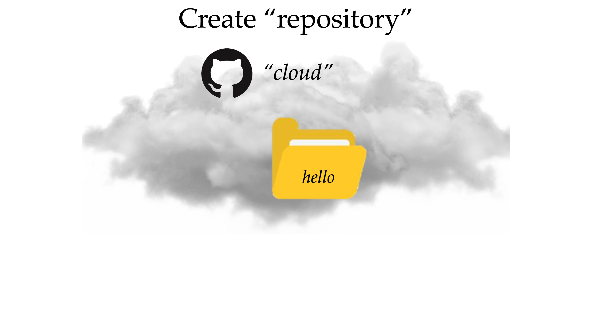
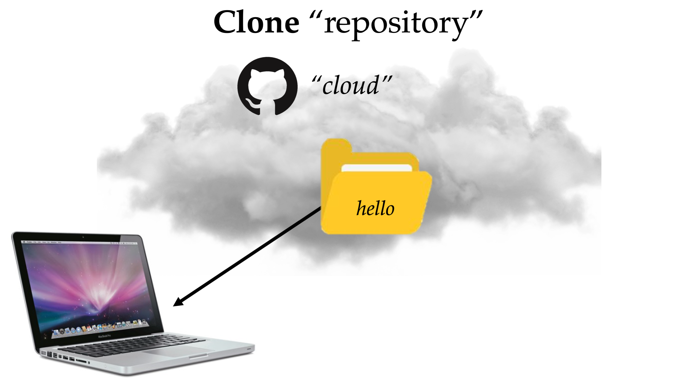
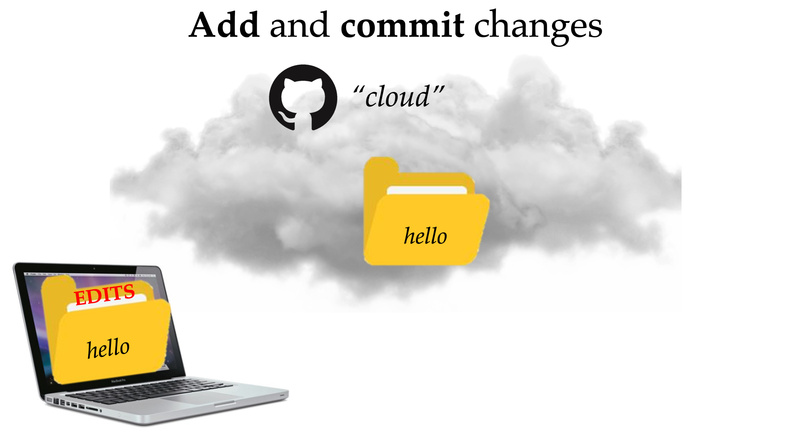
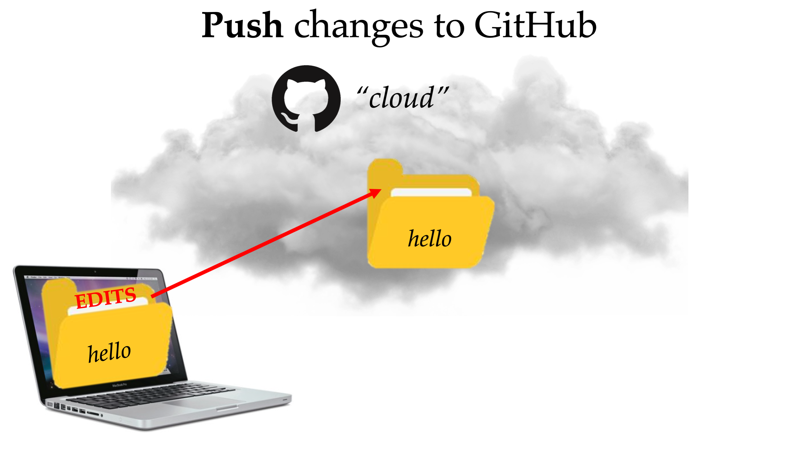
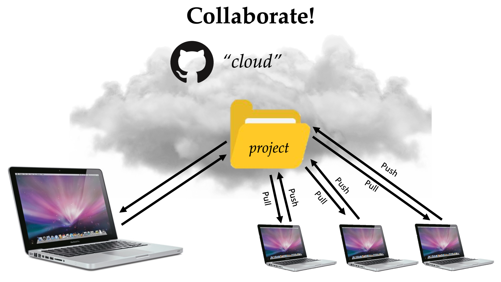
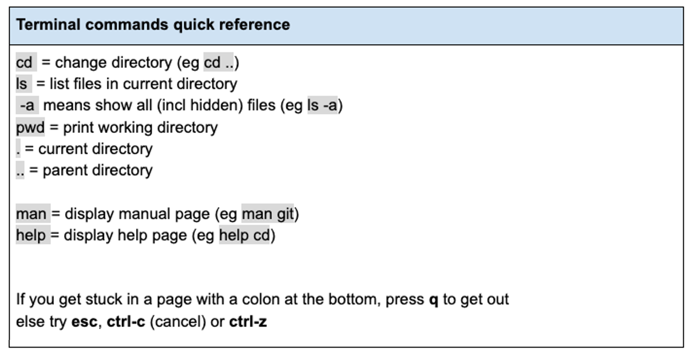
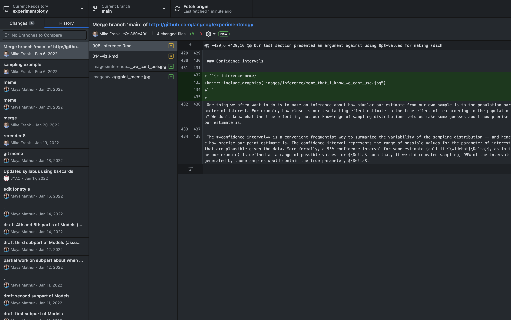
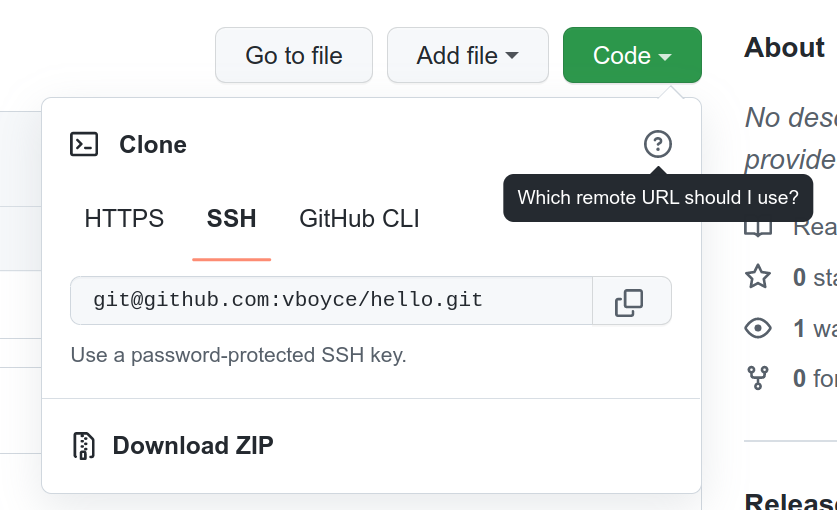

**Mac troubleshooting**
try installing: Git version 1.8.4.2附录 B — Git 和 GitHub
注记学习目标
- 解释 Git 和 GitHub 是什么
- 在自己的电脑上设置 Git 和 GitHub
- 学习如何修改 GitHub 上的 repository
- 练习撤销你在 GitHub 上做过的一次修改
- 学会如何告诉 Git 在项目中忽略哪些文件或文件夹
B.1 引言
你有没有把一份你以为是最终版的 manuscript 发给合作者，也许文件名叫 “Manuscript final”，结果对方发回一个更新版本，叫 “Manuscript final - JC”？于是你按要求修改，再发回去，文件名叫 “Manuscript final - JC FINAL”；与此同时，另一个合作者又发来邮件，附件叫 “Manuscript final - MF”，里面还有更多 edits？如果这听起来很熟悉，请继续读下去，我们来帮你！
首先，让我们介绍 Git。
Git 是一种软件，你可以在自己的电脑上安装并本地运行。它允许你在处理文件时追踪文件变化。Git 能帮助你管理上面那种噩梦场景，因为它让你很容易保留同一文档的不同版本，也很容易在多台电脑上独自处理同一项目，并和其他人协作（无论你们是在不同时间工作，还是同时工作）！换句话说，Git 像一个 undo button，但带有标签，告诉你什么时候做了什么修改，并且有一条历史记录，可以追溯到你对项目做过的第一次修改。这使它非常适合协作项目。
但 Git 作为 version control system，和 GitHub 结合起来会更强大：
GitHub 提供在线存储和共享 Git repositories 的服务。1 任何人都可以在 GitHub 上获得免费账号，而且 GitHub 为学生提供免费的 premium accounts（见 这里）。
1 “repo” 是 “repository” 的缩写。repo 就像一个包含文件的文件夹（这些文件通常作为某个项目的一部分彼此相关），并带有关联的随时间变化的修改历史。
为了描述 GitHub 最有用的一些功能，我们先把 GitHub 设定为一个地方：你可以在其中把工作存储在叫 repositories 的文件夹里。这些 repositories 位于“云端”，因为它们可以通过互联网（github.com）访问，因此你可以从任何设备访问它们。
例如，想象你的合作者有一个叫 “hello” 的项目。他们把所有代码、材料和分析都存储到 GitHub 上一个叫 “hello” 的 repository 中：

作为项目新成员，你需要把这个 repository 复制到自己的本地设备（例如 laptop）上，这样你就可以检查 repository 并做自己的修改。在 GitHub 语言里，把 repository 复制到自己设备上的初始步骤叫做 “cloning” 这个 repository：

一旦你对 “hello” repository 做了修改（例如添加或删除代码、添加或移除文件），这些修改会存在于你的 local repository 中，但你还需要采取步骤，让它们反映回“云端”，这样合作者才能看到这些修改。你需要做的第一步是 “add” 并 “commit” 你的修改。“Adding” 你的修改会为你所做的修改拍一张快照。“Committing” 你的修改会记录这些已添加的修改。注意，这些只是准备步骤，你的所有修改仍然是本地的：

现在，你已经准备好真正把修改分享到云端，让所有合作者看到你改了什么。这个步骤叫做 “pushing” 到 GitHub：

到目前为止，我们描述的是单个用户与 GitHub 的交互。虽然把 GitHub 用作追踪自己修改的方式已经是个好主意，但 GitHub 的真正潜力会在许多用户共同协作同一个项目时释放出来。这允许任何合作者随时 “pull” repository 的最新版本，跟踪谁在什么时候做了什么修改，并轻松 revert 到先前版本：
现在我们已经在概念层面介绍了 GitHub 的不同功能，下一节会是一个更实践的教程，介绍如何以上述方式使用 GitHub。
B.2 回顾基本 terminal commands（终端命令）
本教程会在 Terminal 中操作。下面是一些需要知道的有用命令：

（更多见 这里）
B.3 安装 Git
前往 https://git-scm.com/downloads 并安装 Git。
（Windows 用户，本教程其余部分请打开 GitBash；Mac 用户请打开 Terminal。）
B.3.1 是否成功安装？
在 terminal 中输入：
git --version
查看当前已安装的 Git 版本。
B.3.2 其他版本
本教程会关注如何从 terminal 使用 GitHub，但如果你更喜欢简单的点选体验，可以安装 GitHub desktop app。下面是桌面版外观截图：

其他选项包括 SourceTree（免费）、Tower（不免费，但功能强大，学生折扣约 ~$25）。也可以在 RStudio 中设置 Git pane。
B.3.3 设置你的姓名和邮箱
每个 Git commit 都会使用这些信息。输入：
git config --global user.name "John Doe"
git config --global user.email johndoe@example.com
还要运行一次下面这条命令（它确保 Git 以合理方式 push）：
git config --global push.default simple
B.4 在 GitHub 上创建 repo，并 clone 到你的电脑
在 GitHub 上创建账号：https://github.com/。
在 https://github.com/new 创建一个新的空 public repository。
把它命名为 ‘hello’，并确保勾选 “Add a README file” checkbox2。
2 供以后参考（现在可以忽略！）：你也可以把电脑上已有的任何 directory 变成 Git repo，方法是用 cd 进入该 directory，然后输入 git init。之后，当你想把这个 repo 放到 GitHub 上时，按步骤创建一个新 repo，但不要用 readme 初始化，然后在你电脑上的 directory 中输入下面内容（替换红色文字）：
**git remote add origin git@<span>github.</span>com:<span style="color: red;">your_user_name</span>/<span style="color: red;">repo_name</span>.git****git push -u origin main**B.4.1 设置 authentication（认证）
GitHub 需要一种方式来知道你的电脑是否被授权读取或写入 repository。对于 public repositories，任何人都可以 clone（无需 authentication），但只有 authorized users（例如你和你添加的 collaborators）可以 push changes。对于 private repos，只有 authorized users 可以看到、clone 或 push 到 repo。
根据你访问 GitHub 的方式，有几种 authentication 方法（所有选项在 这里 有更详细说明，包括 GitHub Desktop 的说明）。
我们建议设置 SSH keys，因为每台电脑只需要设置一次，之后你就可以和 GitHub 交互，而不必输入密码或做任何特殊操作。为此，你需要先检查自己是否已有合适的 SSH keys，然后在需要时创建新 key。最好接受 key 保存位置的默认设置。如果你不想每次输入密码，就不要输入 passphrase。最后，你需要把这个 SSH key 添加到 GitHub account。
B.4.2 Clone 这个 repo
在你的 repository 网页上，点击绿色的 ‘Code’ 按钮，并选择 SSH 选项。复制其中的文本。
使用 SSH keys 时，clone repo 应该使用 SSH 选项，它会以 “git@github” 开头。如果你使用不同 authentication method，你会使用 HTTPS 选项 clone。

回到 Terminal（或 GitBash）。
现在我们会把 hello folder clone 到你的电脑。为了本教程，我们把这个 folder clone 到 desktop。
首先使用 cd 和 ls 导航到你的 desktop。（Mac 用户可以输入 cd ~/Desktop 到达那里。）
然后输入（把 URL 替换成你上面复制的那个）：
git clone git@github.com:[username]/hello.git
现在你的 desktop 上会有一个叫 ‘hello’ 的 folder，其中包含一个叫 ‘Readme’ 的文件。
B.5 做一些 commits
什么是 “commits”？一个 commit 是项目在某个时间点的一张快照。每个 commit 都有作者、时间、一个唯一的长 ID（也叫 ‘SHA’ 或 ‘hash’），以及一条描述它做了什么修改的 message。
B.5.1 更新 README 文件
README 文件包含关于某个 directory 中其他文件的信息，通常应在 Git repo 中包含一个 README。你的 README 会从 markdown 渲染到 GitHub repository 的首页（示例见 这里 和 这里）。
当你在 GitHub 上初始化 repo 时，网站创建了一个空 README 文件。我们来写点内容。
在 text editor3 中打开 README 文件，写一两句话描述你的 repo，然后保存修改。（阅读 markdown basics，并在格式化 README 时恰当使用。）
3 之后会有很多文件是简单 text files，文件类型是 .md、.rmd 等。你可以用 text editor 打开这些文件。虽然电脑自带默认编辑器（例如 Notepad、TextEdit），但我们建议下载 Sublime Text，它免费，而且有很多未来会有帮助的强大工具。
B.5.2 Add 并 commit 修改到 Git
在 Terminal 中输入下面命令，导航到 repo：
cd hello
如果输入：
git status
你会得到一条消息，告诉你 README 已被修改。
现在我们会 add this file and commit it4，让 Git 为我们所做的修改拍一张快照：
4 供以后参考（现在可以忽略！）：你可以用 git add -p README.md 只添加文件的一部分，并按照 terminal 窗口底部的说明操作。
git add README.md
git commit -m "update readme"
（-m 放在 commit message 前面，用来描述你修改了什么。）
如果现在输入：
git status
你会得到一条消息，告诉你所有内容都是 up to date（“nothing to commit, working tree clean”）。
B.5.3 向 repo 添加另一个文件并 commit
使用 RStudio5 创建一个新的 R script，其中包含一行代码，例如 print("hello world")。把它作为 ‘pset0.R’ 保存到 hello folder 中。
5 未来我们会使用 R 和 RStudio。如果你还没有下载这些，也可以打开 text editor 做同样的事。
然后回到 terminal，输入：
git status
这会告诉你存在一个叫 pset0.R 的文件，但 Git 还没有 track 它。6
6 如果你发现一个叫 “.DS_Store” 的文件正在被 track，那是一个保存 folder preferences 的 Mac 文件。你可以按下面第 7 步描述，把它加到 .gitignore 文件中，让 Git 不再 track 它。
现在我们会 add this file and commit it（让 Git 开始 track 它）：
git add -A
（-A 表示我们会 add repo 中所有已发生变化的文件）
git commit -m "initial commit of pset0.R"
B.6 Push 你的修改到 GitHub
到目前为止，我们做的 add 和 commit 只影响你的本地电脑。要把修改放到 GitHub 上，使用 push：
git push
如果你前往自己的 GitHub account，现在就能看到更新后的文件。
只有当 remote repository 和 local copy 处于相同状态时，你才能 push 到 remote repository；唯一例外是 commits 中包含的那些修改。如果只有你一个人从一台电脑修改 repo，这可能是真的，但这样就错过了 GitHub 用于协作的大量潜力。
为了养成好习惯，我们建议你在开始修改文件之前，以及 push 修改之前，都先 pull（从 remote 获取 changes 到 local copy）。运行下面命令来 pull：
git pull --rebase
这会更新你的 local copy，使其与 remote 匹配，同时保留你已经 commit 的任何修改。（如果你有 uncommitted changes，会得到 error。）因此，如果你的 collaborator 做了 edits 或添加了 files 并 push 了这些 changes，当你 pull 时，你的 local copy 也会有这些 updates。
B.7 对 repo 做更多修改
现在修改你的 pset0.R 文件（删除和/或添加一两行代码），然后保存。
在 terminal 中输入：
git status
查看 pset0.R 自上次 commit 后已经被修改。
要查看自上次 commit 以来的具体修改，输入：
git diff
然后 commit：
git add -A
git commit -m "[describe change]"
Push 到 GitHub 上的 repository：
git push
TIP：Commits 应该聚焦。尽量 commit 小块、bite-sized 的 changes，这些 changes 应该彼此相关、容易命名；其他 changes 则分开 commit。
Commit messages 的 best practice 是确保你的 commit message 不太长，并且能放进这个句子：“当你 pull 这个 commit 时，它会 ______。”
B.8 回滚到先前版本
有时你会想回到先前的 commit。方法如下：
要查看先前 commits，输入：
git log
要更改显示 commits 的数量，在前面加一个 dash 输入你想看到的数量。例如，要查看最近三个 commits，输入：
git log -3
（你也可以在 GitHub 上查看 commit history。）
如果需要查看 repo 的先前版本，可以使用 commits 附带的长 ID 数字（也叫 hashes 或 SHAs）来回滚到它们。如果某些东西坏了，而你不知道它是怎么坏的，这会非常有用。你可以回滚到程序还没坏的最后一个 commit，看看从那时起哪些文件发生了变化，以及如何变化。
例如，假设我们想回滚到最初的 commit，以便运行当时的代码。我们来看最初的 commit。你可以输入 git log，然后按 space bar 向下滚动到最初的 commit。复制粘贴这个 commit 的 hash（按 ‘q’ 回到主 terminal 窗口），然后输入（把 hash 替换为你复制的那个）：
git checkout a240f92a22cb8e9b1300bfa690e99ef07692151e
或者只输入：
git checkout a240f92
（如果你提供 hash 的前 8-10 个字符，Git 足够聪明，能判断你想输入哪个 commit。）
如果打开 desktop 上的 hello folder，你会注意到它现在处于你做出第一个 commit 之后的状态。
IMPORTANT WARNING：检查完 checkout 后，请务必输入下面命令，回到你开始的地方 [main branch 上的 latest commit]：
git checkout main
要把文件 revert 到早期 commit 中的状态，输入（把 0766c053 替换为你复制的 hash 前 8-10 个字符）：
git revert --no-commit 0766c053..HEAD
git commit -m "revert all changes since first commit"
这本质上会拿走你自这个 commit 以来做过的所有 changes，撤销它们，然后把这个撤销保存为一个新的 commit。（你之前的 commits 仍然存在。）
For more info on undoing things in Git, check:
https://github.com/blog/2019-how-to-undo-almost-anything-with-git.如果你想 revert 某一个特定 commit（而不是某个 commit 之后的所有 commits），输入：
git revert --no-commit 0766c053
git commit -m "revert the commit where I did xyz..."
这些 reversions 也只是更多 commits，所以如果你 revert 了某个东西（并 commit 了它），但后来不想要这个 change，你可以 revert 那个进行 revert 的 commit，回到之前的状态。
B.9 什么不应该放到 Git 上
有些东西你不想放到 Git 上：
output files（由 repo 中其他文件确定性生成的文件，例如 LaTeX project repo 中生成的 PDFs）
log files（例如
.RData和.Rhistory。你无法描述对它们做了什么 “changes”，而且不同人的.RData和.Rhistory文件总会冲突。）sensitive data（例如 human subject data 和 passwords）
configuration files，这些文件包含与你自己电脑相关的配置（重要：如果你在 Mechanical Turk 上运行东西，确保你的 bin/mturk.properties 文件不要放到 Git 上，因为该文件包含 access key，可用于向 Amazon authenticate。）
你可以把这些放进一个特殊的 .gitignore 文件，这样 Git 就不会建议你 add 它们；即使你试图 add，Git 也会提醒你不要添加。你可以在 Sublime Text 这样的 text editor 中创建这个 .gitignore 文件，并按需更新。
你的 .gitignore 文件可能像这样（准确保存为 .gitignore，不要加文件扩展名）：
# R created files
*.Rproj
*.Rproj.user
*.Rhistory
*.Ruserdata
*.history
*.RData
# Image/output files unless otherwise specified
*.png
*.docx
*.doc
*.jpg
*.gif
# Misc Knit Files
*.aux
*.gz
*.log
*.rdx
*.rdb
*.knit.md
*cache
*.results
# Other
*.httr-oauth
*.DS_Store
# MTurk credentials and data
auth.json
my-own-auth.json
mturk/
mturk-and-gmail.txt
# Specific file keep
!README.md
!/original....pdf
.Rproj.userB.10 更多资源
GitHub 有许多有用指南，可用于学习 branches、pull requests、forking 等内容：https://guides.github.com/ https://help.github.com/articles/good-resources-for-learning-git-and-github/
尽管本教程覆盖的内容可能显得 overwhelming，但你真正需要知道的命令其实只有少数几个；它们可以在这个方便的 cheatsheet 上找到（旁边还有一些我们没有覆盖的命令）。
在 https://education.github.com/ 申请 premium account，以获得免费的 private repos。
对于想深入学习 Git 的学生，ProGit 是 Scott Chacon 写的一本详尽的 open source book。它可以在线查看，也可以下载为 ePub、Mobi 或 PDF 格式。
致谢：感谢 Cayce Hook、Erin Bennett 和 Daniel Watson 为 Psych 251 创建了本教程的第一版！